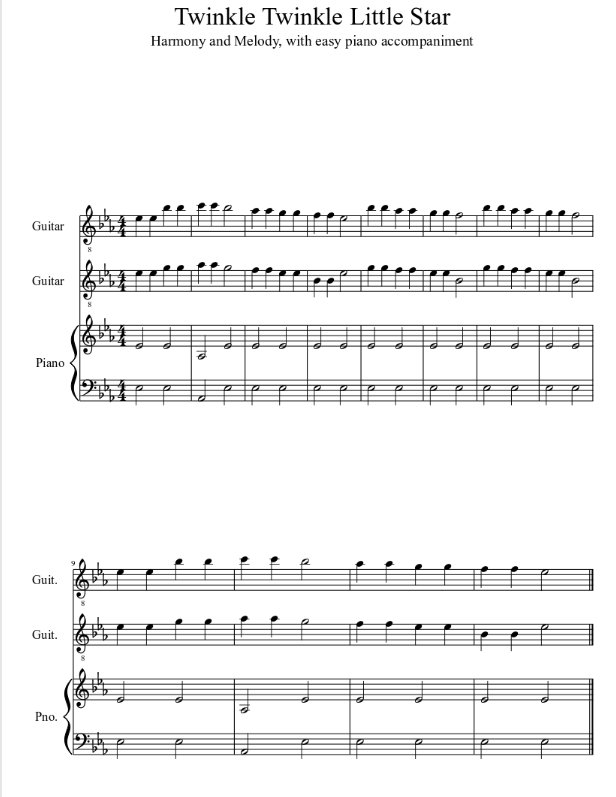

Week 5: Harmonic Analysis of "Twinkle Twinkle Little Star"
Analysis Overview: This week, we analyze the harmonic structure of "Twinkle Twinkle Little Star." The song’s melody is supported by a simple yet elegant chord progression, making it ideal for introducing harmonic analysis to students.
Chords and Harmonic Progressions
The song is primarily in the key of **C major**, which is common for beginner compositions. Below is the chord progression for the melody:
- **C - G - Am - F**
- **C - G - F - C**
Each chord complements the melody by providing harmonic support. This progression follows the **I-V-vi-IV** pattern, which is widely used in various musical genres.
Visual Analysis of Chords
The harmonic progression has been visualized using MuseScore. The image below highlights the chords in the score:
Cadence Analysis
The song ends with a **perfect cadence** (V-I), which creates a sense of resolution. This is typical in traditional Western music and adds to the song’s simplicity and appeal.
Chord Chart:
| Measure | Chord | Notes |
|---|---|---|
| 1 | C | C, E, G |
| 2 | G | G, B, D |
| 3 | Am | A, C, E |
| 4 | F | F, A, C |
Conclusion
The harmonic progression of "Twinkle Twinkle Little Star" demonstrates how simple chords can enhance a melody. The use of a standard progression, combined with a perfect cadence, contributes to the song's timeless and universal appeal.
Next Week →